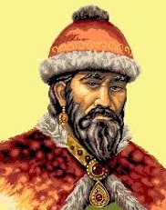
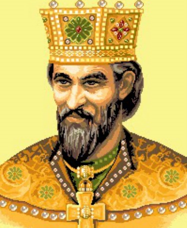
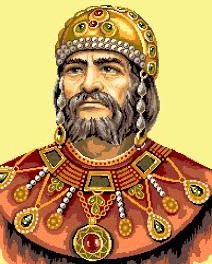
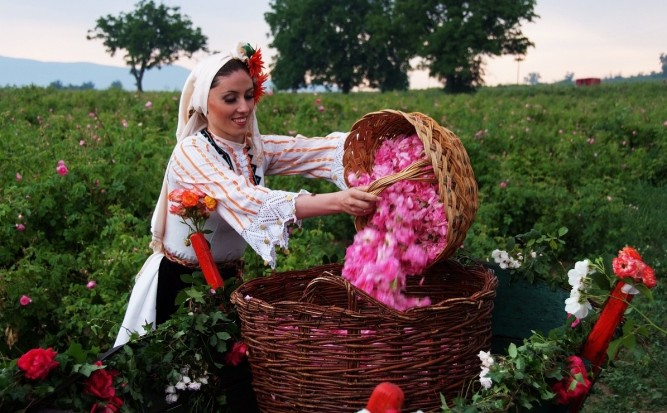
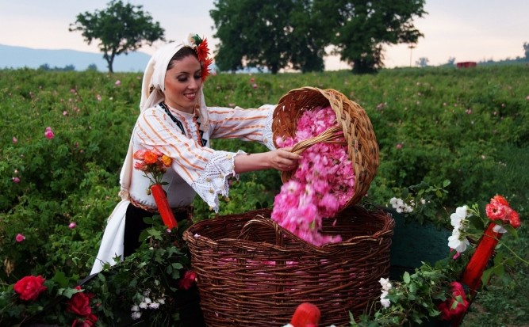

| |
BULGARIA |
|
 After the disintegration of Greater Bulgaria,
which was conquered by the Khazars, part of the Proto-Bulgarians, led by Asparuh,
and another, led by Kuber, moved to the Balkan Peninsula and merged with the Slavs,
who came from the north in the early VI century and mixed with the local Byzantines.
After Asparuh won a victory over the army of the Byzantine Emperor Constantine IV,
an agreement was reached between Asparuh and Constantine. According to him,
the proto-Bulgarians and the Slavs received most of the territory between the Balkan Mountains and the Danube.
This marks the beginning of the creation of the emerging Bulgarian nation.
The treaty with Byzantium from 681 is accepted as the moment of creation of the First Bulgarian state.
After the disintegration of Greater Bulgaria,
which was conquered by the Khazars, part of the Proto-Bulgarians, led by Asparuh,
and another, led by Kuber, moved to the Balkan Peninsula and merged with the Slavs,
who came from the north in the early VI century and mixed with the local Byzantines.
After Asparuh won a victory over the army of the Byzantine Emperor Constantine IV,
an agreement was reached between Asparuh and Constantine. According to him,
the proto-Bulgarians and the Slavs received most of the territory between the Balkan Mountains and the Danube.
This marks the beginning of the creation of the emerging Bulgarian nation.
The treaty with Byzantium from 681 is accepted as the moment of creation of the First Bulgarian state.
During the reign of Krum (803 - 814) Bulgaria grew to the southwest and southeast, inhabiting the area of today's Sofia in 811 and today's Edirne in 813. He defeated Emperor Nicephorus I in the battle of the Varbishki Pass on July 26, 811. and from his skull he makes a forged cup. He reached the gates of Constantinople, but failed to cross them.
Knyaz Boris I (Michael) (852 - 889) accepted Christianity as the official religion. The resistance in the face of some boyars was brutally crushed - those who did not want to accept the new religion were persecuted and killed. He dethroned and blinded his eldest son, Prince Vladimir Rasate (889-893), for his attempt to restore paganism. Knyaz Boris I undertook this move to unite proto-Bulgarians and Slavs, who at that time had radically different religions, as well as to strengthen the international prestige of Bulgaria in the strong "family" of Christian states. Bulgarians received the right to their own archbishopric church. Around 886, Boris received in Bulgaria the disciples of Cyril and Methodius expelled from Great Moravia - Clement, Nahum and Angelarius. Thus the alphabet created by the brothers Cyril and Methodius - the Glagolitic alphabet.
 The time of Simeon I is called the Golden Age. He received his education in Constantinople and built many literary centers throughout Bulgaria. Simeon I became a serious threat to the Byzantine Empire. After many military successes, he set out to conquer Constantinople. He proclaims himself emperor. With it, Bulgaria reaches three seas.Bulgarian Rose 
 
